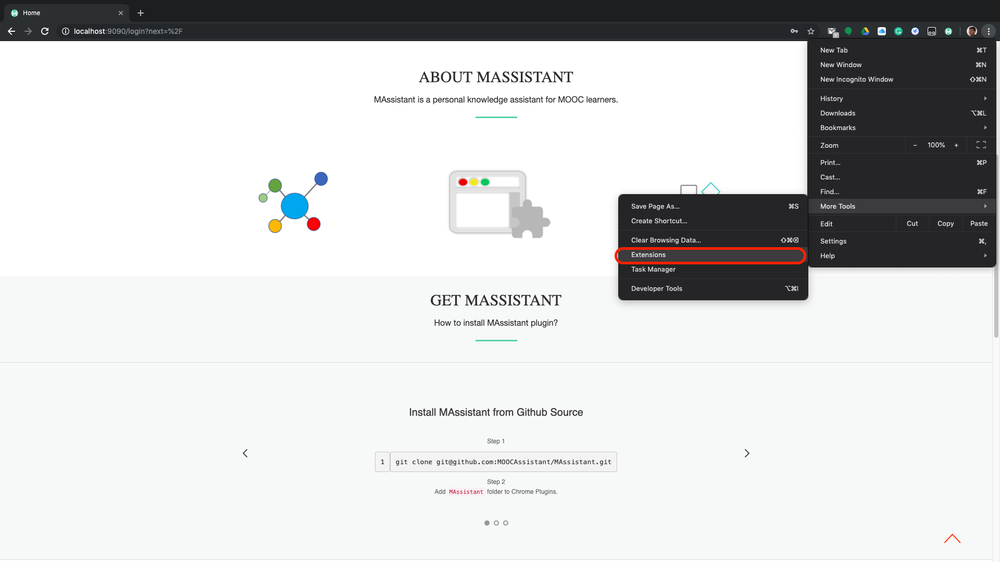
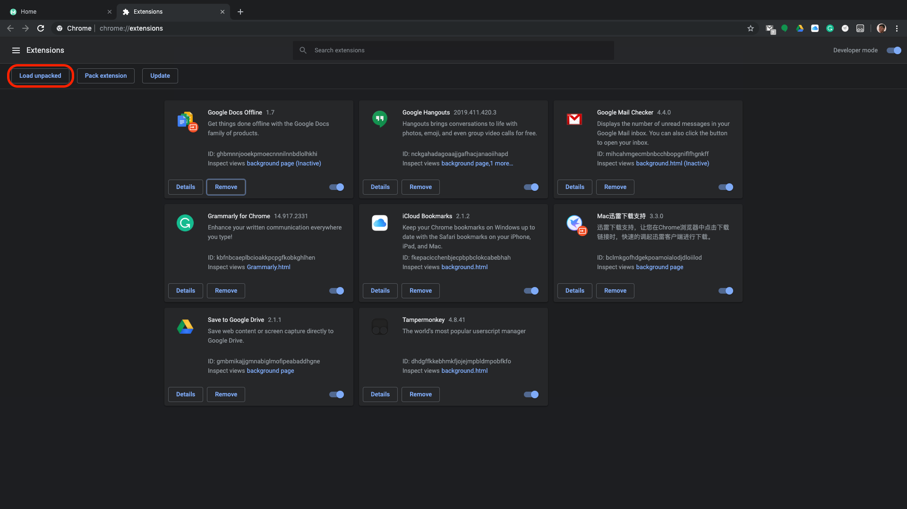
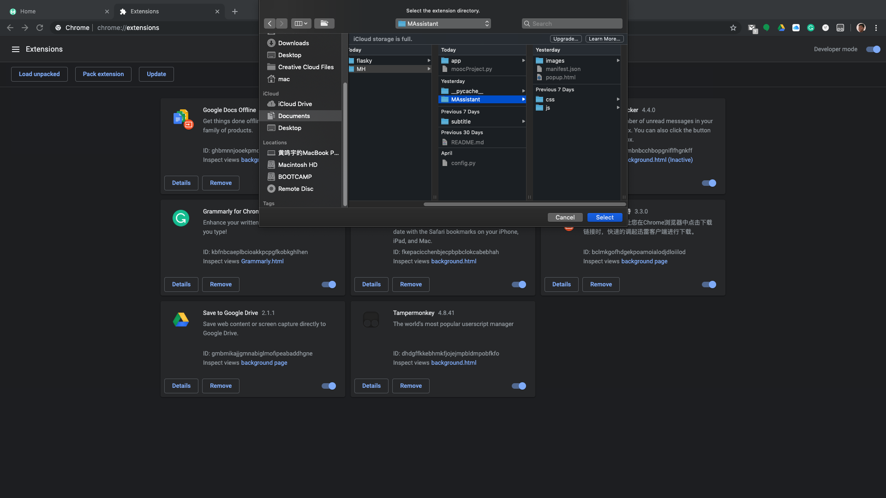

About MAssistant
MAssistant is a personal knowledge assistant for MOOC learners. MAssistant helps users to trace the concepts they have learned in MOOCs, and to build their own concept graphs.
There are three key components in MAssistant:
(i) a large-scale concept graph built from open data sources, which contains concepts in various domains and relations among them;
(ii) a browser extension which interacts with learners when they are watching video lectures, presents important concepts to them;
(iii) a web application allowing users to explore their personal concept graphs, which are built based on their learning activities on MOOCs. MAssistant will facilitate the knowledge management task for MOOC learners, and make the learning on MOOCs easier.
Video Demo
Try MAssistant
How to install browser extension
Option 1: Git clone from github and add plugin dir to Chrome Plugins.
Step 1
1
git clone git@github.com:MOOCAssistant/MAssistant.git
Step 2

Click Setting button -> More tools -> Extensions
Step 3

Click 'Load Unpacked'
Step 4

Choose the MAssistant folder in the downloaded Github folder.
Option 2: Install from Google Drive.
- Step 1
Click https://drive.google.com/drive/folders/1KVT4I64hPzsBWnbc0Zt5SnpB5zxyJGDF?usp=sharing - Step 2
DownloadMAssistantfolder. - Step 3
AddMAssistantfolder to Chrome Plugins, following the same steps above.
How to use web application
Just go to this page and expore it!
https://kg.bnu.edu.cn/
The content of this web page is based on your learning behaviors on MOOC platform Coursera.